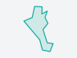

프로젝트›새 프로젝트
새 프로젝트
새 서비스 하나를 만드는 일 — 적는 것은 셋1서비스 이름 공개되면 서비스 카드 이름이 됩니다
비닐하우스 20262무엇을 찾나 영상에서 AI가 찾을 것 · 세는 방식은 그림에서 고름
비닐하우스 AI 결과
AI 결과 AI 결과
AI 결과3영상 영상 보관함에서 고르면 지역은 영상의 자리에서 정해집니다


 3장 고름2023 항공 2 · 2025 드론 1→ 지역 증평군 · 함양군 · 남원시
바꾸기
3장 고름2023 항공 2 · 2025 드론 1→ 지역 증평군 · 함양군 · 남원시
바꾸기
새 영상 파일은 만든 뒤 1단계에서 올립니다 · 영상 없이 만들려면 '지도에서 지역 정하기'
더 적을 것어디에 쓰나(기관 · 업무) — 선택
취소만들기